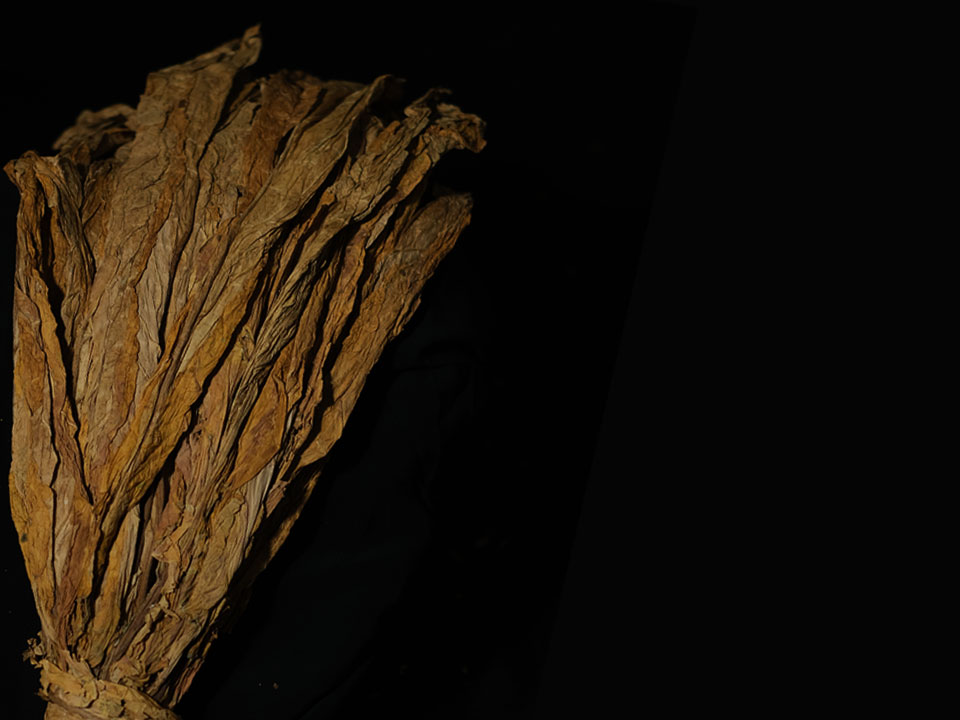
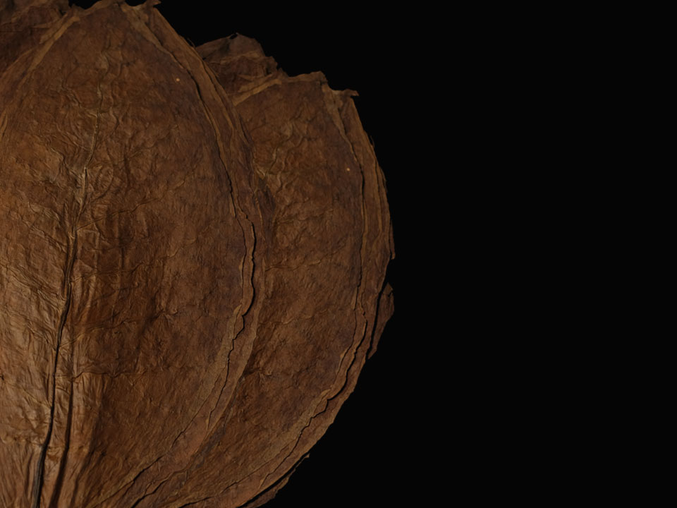
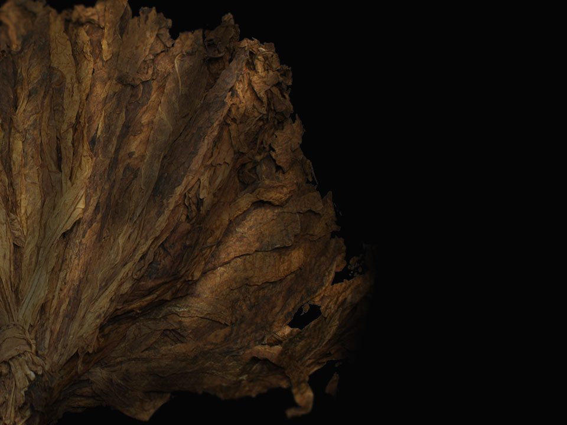

Flue-Cured Virginia

In Indonesia, Flue-Cured Virginia (FCV) tobaccos are grown
mainly in the Lombok and Bali regions. Leaves from each region
carry distinct characteristics — Lombok FCVs lean toward a
flavorful, aromatic profile, while Bali FCVs are known for
their bold, high-impact character.
View Detail
Indonesia is well known for its Rajangan tobacco, a farmer's
hand-cut rag variety. Unlike cut rag produced elsewhere,
Rajangan leaves are cut while still green, giving the tobacco
its distinctive texture and character.
View Detail
Sun-Cured tobaccos are cured naturally under direct sunlight.
Popular Indonesian varieties include Kasturi, Madura, Jatim,
Lombok, Jombang, Paiton, Weleri, Kedu, Tulungagung, Besuki,
Garut, Galek, and Lumajang VO — each named after the region
where it is grown.
View Detail
Dark Air Cured

Dark Air-Cured tobacco is left to dry slowly in open,
well-ventilated barns without added heat or smoke. The slow
process develops a rich, dark leaf with a full-bodied
character prized in traditional blends.
View Detail
Dark Fired Cured

Dark Fired-Cured tobacco is cured over smoldering hardwood
fires, giving the leaves a distinctive smoky aroma and deep,
dark color. This traditional method is valued for the bold
flavor it brings to a blend.
View Detail
Burley tobacco is air-cured in barns, resulting in a light,
low-sugar leaf with a naturally mild flavor. Its high
absorbency makes it a popular base for a wide range of
tobacco blends.
View Detail